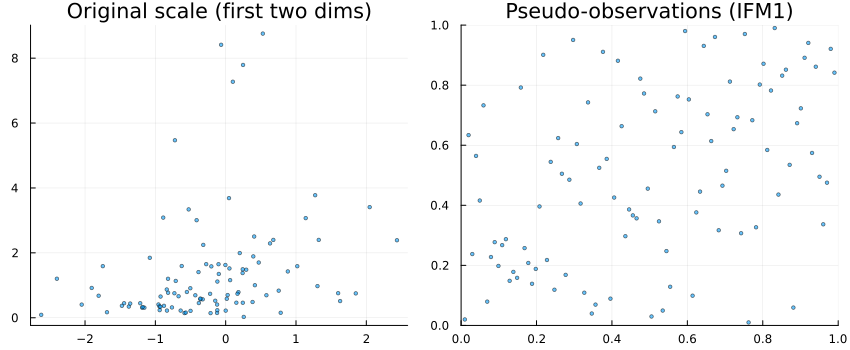
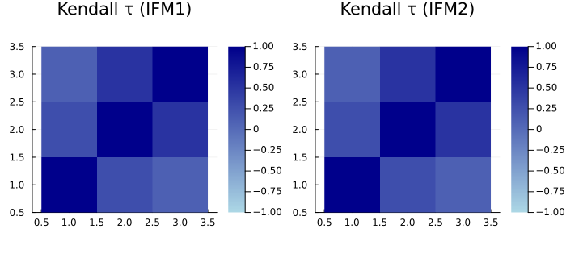

Influence of the method of estimation
The ability to fit the copula and marginals directly through the SklarDist interface is very practical for quickly fitting a model to a dataset. It works as follows:
using Copulas, Distributions
X₁ = Normal()
X₂ = LogNormal()
X₃ = Gamma()
C = GaussianCopula([
1.0 0.4 0.1
0.4 1.0 0.8
0.1 0.8 1.0
])
D = SklarDist(C,(X₁,X₂,X₃))
x = rand(D,100)3×100 Matrix{Float64}:
0.753966 -0.938538 0.883694 -0.386487 … -0.728985 -0.625256 0.392984
0.83522 0.23517 1.42745 1.40789 0.755539 1.59446 1.89052
0.622633 0.356281 1.262 0.42424 1.24822 1.13877 1.17883And we can fit the same model directly as follows:
quick_fit = fit(SklarDist{GaussianCopula, Tuple{Normal,LogNormal,Gamma}}, x)SklarDist{GaussianCopula{3, Matrix{Float64}}, Tuple{Distributions.Normal{Float64}, Distributions.LogNormal{Float64}, Distributions.Gamma{Float64}}}(
C: GaussianCopula{3, Matrix{Float64}}(Σ = [1.0 0.3900283941163381 0.1204703220267088; 0.3900283941163381 0.9999999999999998 0.7364324610575647; 0.1204703220267088 0.7364324610575647 0.9999999999999999]))
m: (Distributions.Normal{Float64}(μ=-0.2328797450166947, σ=0.9233169275595248), Distributions.LogNormal{Float64}(μ=-0.20003641067958802, σ=1.0524430748511178), Distributions.Gamma{Float64}(α=1.0440243818878223, θ=0.8613857244418106))
)
However, we should clarify what this is doing. There are several ways of estimating compound parametric models:
- Joint estimation (JMLE): This method simply computes the joint log-likelihood $\log f_D$ of the random vector
Dand maximizes, jointly, with respect to the parameters of the dependence structure and the marginals. This is the easiest to understand, but not the easiest numerically, as the resulting log-likelihood can be highly non-linear and computations can be tedious. - Inference functions for margins (IFM): This method splits the process into two parts: the marginal distributions $F_{i}, i \in 1,..d$ are estimated first, separately, through maximum likelihood on marginal data. Denote $\hat{F}_{i}$ these estimators. Then, we fit the copula on pseudo-observations, which can be computed in two ways:
- IFM1: Use empirical ranks to compute the pseudo-observations.
- IFM2: Use the estimated distribution functions $\hat{F}_{i}$ for the marginals to compute the pseudo-observations as $u_{i,j} = \hat{F}_{i}(x_{i,j})$.
The fit(SklarDist{...},...) method in Copulas.jl is implemented as follows:
function Distributions.fit(::Type{SklarDist{CT,TplMargins}},x) where {CT,TplMargins}
# The first thing to do is to fit the marginals :
@assert length(TplMargins.parameters) == size(x,1)
m = Tuple(Distributions.fit(TplMargins.parameters[i],x[i,:]) for i in 1:size(x,1))
u = pseudos(x)
C = Distributions.fit(CT,u)
return SklarDist(C,m)
endThis clearly performs IFM1 estimation. IFM2 is not much harder to implement, and could be done for our model as follows:
# Marginal fits are the same than IFM1, so we just used those to compute IFM2 ranks:
u = similar(x)
for i in 1:length(C)
u[i,:] .= cdf.(Ref(quick_fit.m[i]), x[i,:])
end
# estimate a Gaussian copula:
ifm2_cop = fit(GaussianCopula,u)GaussianCopula{3, Matrix{Float64}}(Σ = [1.0000000000000002 0.35131670537765625 0.06144620681825256; 0.35131670537765625 0.9999999999999999 0.7636498482238896; 0.06144620681825256 0.7636498482238896 1.0]))Let us compare the two obtained correlation matrices:
ifm2_cop.Σ .- quick_fit.C.Σ3×3 Matrix{Float64}:
2.22045e-16 -0.0387117 -0.0590241
-0.0387117 1.11022e-16 0.0272174
-0.0590241 0.0272174 1.11022e-16We see that the estimated parameter is not exactly the same, which is normal. Even in this contrived example, the difference between the two is not striking. Whether one method is better than the other is unclear, but the JMLE method is clearly superior by definition. However, due to its complexity, most software do not perform such estimation.
Visual comparison
using Plots, StatsBase
P1 = scatter(x[1,:], x[2,:]; ms=2, alpha=0.6, title="Original scale (first two dims)", legend=false)
U1 = pseudos(x)
P2 = scatter(U1[1,:], U1[2,:]; ms=2, alpha=0.6, xlim=(0,1), ylim=(0,1), title="Pseudo-observations (IFM1)", legend=false)
plot(P1, P2; layout=(1,2), size=(850,350))
τ1 = StatsBase.corkendall(U1')
U2 = similar(x)
for i in 1:length(C)
U2[i,:] .= cdf.(Ref(quick_fit.m[i]), x[i,:])
end
τ2 = StatsBase.corkendall(U2')
plot(heatmap(τ1; title="Kendall τ (IFM1)", aspect_ratio=1, c=:blues, clim=(-1,1)),
heatmap(τ2; title="Kendall τ (IFM2)", aspect_ratio=1, c=:blues, clim=(-1,1)),
layout=(1,2), size=(700,320))